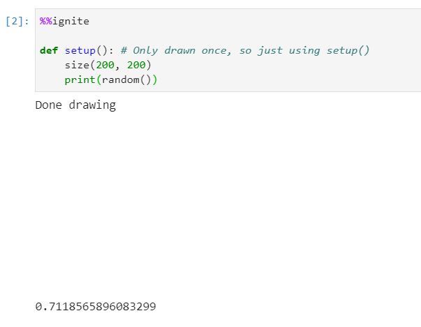
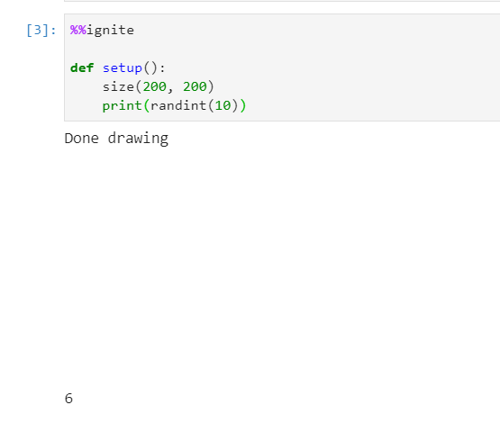
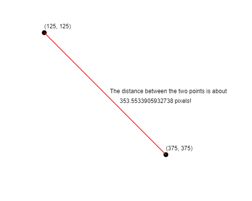
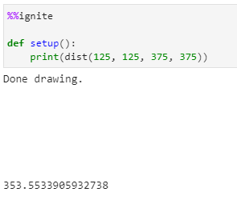
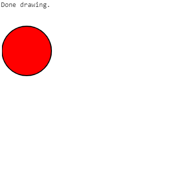
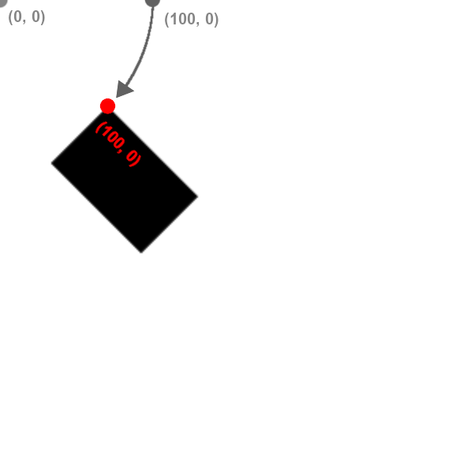
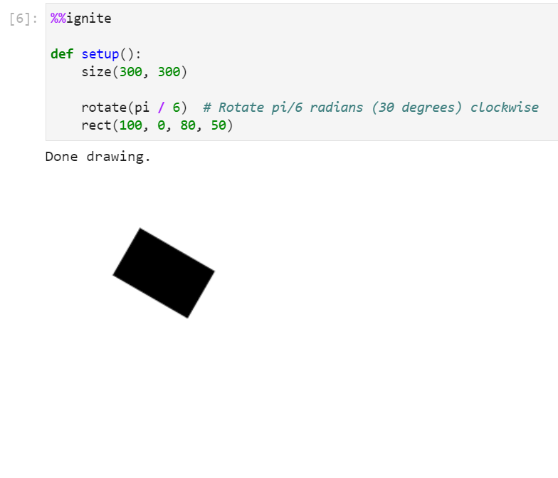
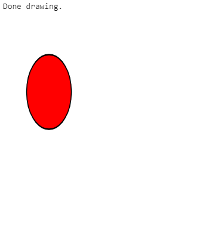
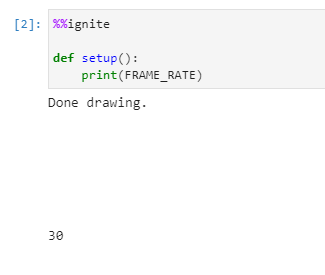

Utilities
Below is a list of all of some other helpful functions available within spark.
All of the examples below assume you have the boilerplate from the notebook setup in your code
Create a random float between 0 and 1
To generate a random float between 0 and 1 use:
1 | |
Example(s):
Printing a random value between 0-1
1 2 3 4 5 | |
Results in:

Create a random int
To generate a random integer between 0 and n (inclusive) use:
1 | |
Parameters
- n: (int) The highest value in the range
Example(s):
Printing a random value between 0-10
1 2 3 4 5 | |
Results in:

Distance between two points (x1, y1) and (x2, y2)

To find the distance between two points (x1, y1) and (x2, y2), use the following command:
1 | |
Parameters
- x1: (float) The x-coordinate of the first point
- y1: (float) The y-coordinate of the first point
- x2: (float) The x-coordinate of the second point
- y2: (float) The y-coordinate of the second point
Example(s):
Print the distance between (125, 125) and (375, 375)
1 2 3 4 | |
Results in:

Translate
Change the origin of the canvas.
Usage:
1 | |
- x: (float) The horizontal distance to translate the canvas.
- y: (float) The vertical distance to translate the canvas.
Example(s):
Translate the canvas 50 units right and 75 units down
1 2 3 4 5 6 7 8 9 | |
Results in:

Rotation

Transformations are always done to the canvas, not the individual shapes themselves. Rotation is done around the origin, point (0, 0) and affects all shapes drawn afterwards. You can use our built-in pi variable to express radians, or convert from degrees to radians by multiplying your number of degrees by pi / 180.
Note that canvas transformations are not removed automatically. In other words, if you want to rotate just one shape in your draw() function, you should rotate the canvas by r radians, draw your shape, and then rotate by -r radians to undo the effect. Also note that you can rotate on a point other than the origin by first calling translate to change the origin to the new point.
To rotate the canvas clockwise around the origin, use:
1 | |
Parameters
- r: (float) The angle, in radians to rotate the canvas
Example(s):
Rotating a rectangle by 30 degrees clockwise
1 2 3 4 5 6 7 | |
Results in:

Scale
Scales the canvas. Note that scaling applies to the canvas, not to individual shapes. You can scale on a point other than the origin by first calling translate to change the origin to the new point.
There are two ways to use scale:
| Method | Description | Syntax |
|---|---|---|
| 1 float | Scale canvas width and height by some amount, i.e. 1.5 | scale(1.5) |
| 2 floats | Scale canvas width by first number and height by second number, i.e. 2.5, 3.5 | scale(2.5, 3.5) |
Scale with one float
1 | |
- n: (float) The amount to scale the height and width of the canvas.
Example(s):
Double height and width of canvas using scale
1 2 3 4 5 6 7 8 9 | |
Results in:

Scale with two floats
1 | |
- x: (float) The amount to scale the width of the canvas.
- y: (float) The amount to scale the height of the canvas.
Example(s):
Scale canvas width by 0.75 and canvas height by 1.25
1 2 3 4 5 6 7 8 9 | |
Results in: 
Accessing the canvas frame rate
The frame rate of the canvas can be accessed through the built-in variable
1 | |
The value of FRAME_RATE is set to 30 by default, and should not be changed by the user. Changing this manually will not change the actual frame rate, and will likely result in errors.
Example:
1 2 3 4 | |
Results in:

The use-cases of this of this variable are fairly limited, but can be used for example to set a speed variable in terms of the frame rate. For example:
1 2 3 4 5 6 7 | |